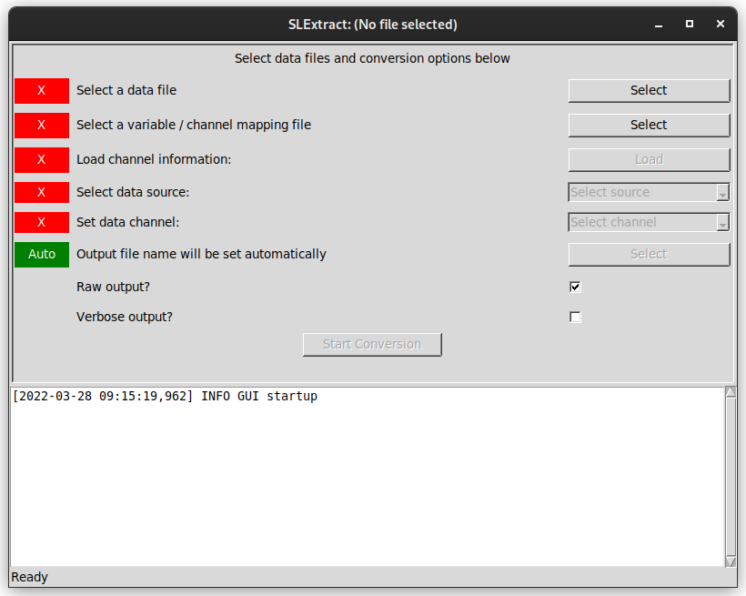
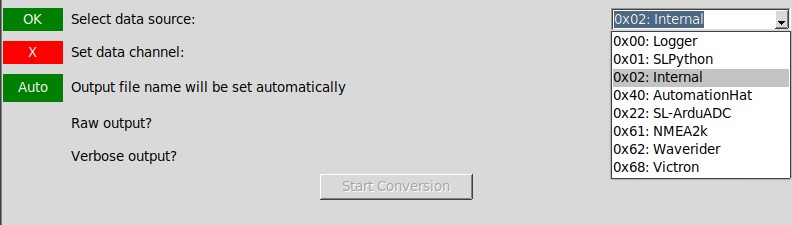
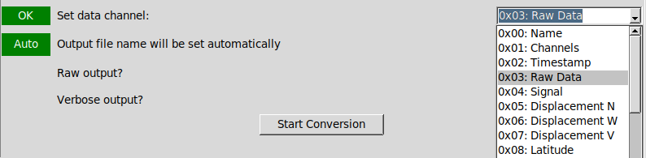

- Generated by
 1.9.1
1.9.1
|
SELKIELogger
0.9.18
|
This provides a more friendly interface to SLExtract, but with the same features.

The top panel of the interface presents a number of steps intended to be followed from top down, with the status of each step given in the left hand column. This status will generally be an "X" on a red background for steps that still need to be completed or have invalid values and the text "OK" on a green background for completed and valid stages (a small number of exceptions are described below). The lower pane shows information and error messages that may be generated as the files are processed.
The first step in the process is to select main data file, using the first "Select" button. Once a data file has been selected the status in the left hand column will change to "OK" on a green background - note that this only reflects the selection of a valid file name and no checks are carried out on the file itself at this point.
If a channel mapping file exists with a name matching the data file, it will be selected automatically. This will be reflected by the status marker changing to show "OK". If no channel mapping file is found automatically (or an alternative is to be provided to rename output columns), the second "Select" button can be used to select the file manually.
If the selected data file is changed, the selected channel mapping file will also be updated. If no new file can be identified automatically, a "Check" warning will be displayed.
If no channel mapping file is available, manually select the main data file again for this step. This will lead to longer processing times for the next step as the whole data file will be read to identify the available data sources.
If no mapping file is available but the source and channel ID numbers are known the command line SLExtract tool can be used instead.
Once the correct data and channel mapping files have been selected, click "Load" to read information about the available data sources in this file. If no channel mapping file was available, this may take a few minutes as described above.
Once data source information has been loaded, the different sources will be listed here for selection. Each source is identified by ID number and the name given in the channel mapping file.

Once a source has been selected, all advertised channels from that source will be listed here. If you are trying to create a data file for use with other software, select "Raw Data". This will usually be channel 3 for sources supporting this function.

A default file name will be generated once the main data file has been loaded and a valid source and channel have been selected. The default name will be based on the original file name with source and channel IDs appended.
There are two checkboxes available to enable verbose output from the data conversion process (off by default) and to enable raw output. When outputting data in raw format, data will be written to file without headers identifying the message source and channel. This is usually desirable when creating files for use with third party tools. If extracting a specific channel for conversion and analysis using other tools supporting the SELKIE Logger format, raw output can be disabled by clearing this checkbox.
The "Start Conversion" button will only be enabled once sufficient information has been provided to allow the conversion process to be run. The button will be disabled while conversion takes place and re-enabled on completion. Information from the conversion process will be output to the log pane - this includes confirmation of files being used and any information or error messages saved to the data file by the data logging software.
Once conversion has been completed, this program can be closed without requiring any further actions.